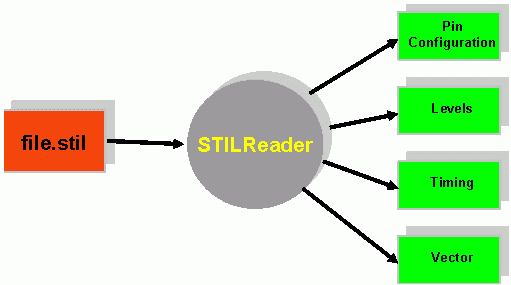
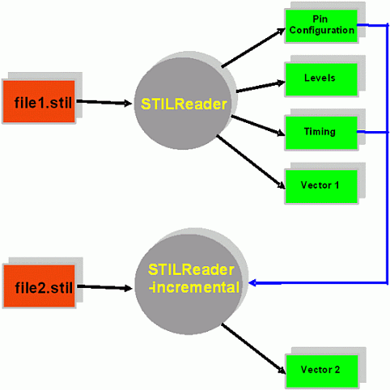
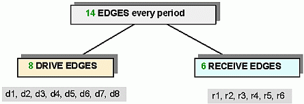
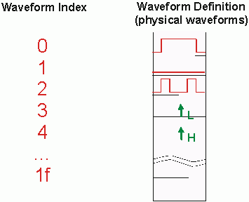
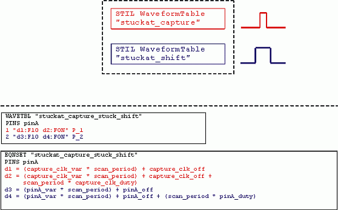
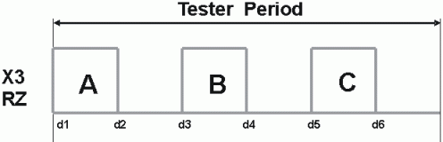
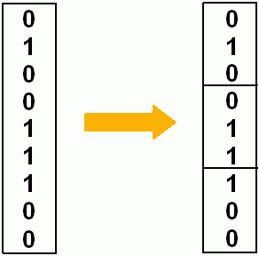
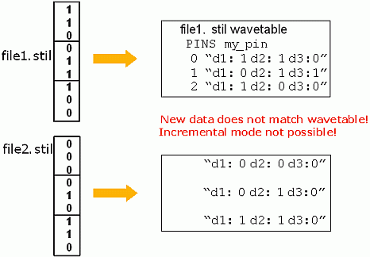
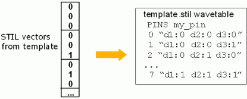
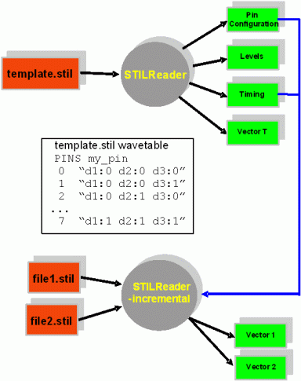

STIL to V93000 timing and vector translation with a focus on x-modes
Chris Koknat, Verigy
Ajay Khoche, Verigy
Paper ID: 104358
Abstract
The STIL language is very rich and almost infinitely flexible. However, testers are not infinitely flexible. Each tester platform has its own unique set of capabilities and constraints. Therefore, a STIL based workflow and toolset must be designed around the target tester's capabilities and constraints. The DFT engineers who create the set of STIL files, the translation toolset, and the test engineers who use the translation tools must all be well aligned. In this paper, the capabilities and constraints of the V93000 Single Density and Pin Scale testers will be discussed, as they pertain to STIL translation in general, and to x-modes in particular. A workflow and toolset for x-mode translation of STIL files to 93000 timing and vectors will be introduced.
Introduction to the STIL language
The STIL language (IEEE 1450.0-1999) and its extensions support a tester-neutral description of timing specification, patterns, and serial scan. It is somewhat similar to the WGL language, but has a richer feature set.
STIL files are generated by simulation, conversion, and ATPG tools, and can also be created by scripting languages such as Perl. They can then be converted to a tester platform using translation software.
STIL
The STIL language is very rich and infinitely flexible. However, testers are not infinitely flexible. Each tester platform has its own unique set of capabilities and constraints. Therefore, a STIL based workflow and toolset must be designed around the target tester's capabilities and constraints. The DFT engineers who create the set of STIL files, the translation toolset, and the test engineers who use the translation tools must all be well aligned.
STILReader
STILReader is Verigy's STIL translation tool for the V93000 tester. It supports Single Density and Pin Scale systems. It converts one STIL file into a complete V93000 device directory, containing a pin configuration, levels, timing, and vectors.

The tool is executed on the Linux command line as shown below. The setup file "my.setup" contains parameters governing the translation (tester model, signals to include/exclude, etc.)
stilreader -setup my.setup file.stil
STILReader incremental mode
STILReader allows the re-use of existing V93000 wavetables and timing equationsets. This is called "incremental mode".
This allows, for example, one scan wavetable and equationset to be used for an entire set of scan STIL files, rather than creating a unique wavetable and equationset for each scan STIL file. This also allows the vector labels to be combined in a burst, as they use the same V93000 timing.
When running in incremental mode, STILReader first checks to make sure that the existing V93000 timing (from file1.stil) is identical to the timing in file2.stil. It then generates vector file #2, based on file2.stil, with physical waveform DC/DC power units that match the existing V93000 wavetable. This mode will be important later in the x-mode section.
Incremental mode re-uses existing timing. It does NOT add or modify waveforms, edges, or spec variables in the existing timing.

Timing architecture
In STIL, a structure called a waveform table defines edge actions and edge delays.
Waveform table:
my_pin { P { '5ns' U; '10ns' D; } }On the V93000, the wavetable defines the edge actions, while the timing equation set defines the edge delays. The V93000 wavetable and equation set shown below match the STIL waveform table shown above.
WAVETBL "example" PINS my_pin 0 "d1:1 d2:0" P EQNSET "example" PINS my_pin d1 = 5 d2 = 10
On the V93000 Single Density, 8 drive edges and 6 receive edges are available per tester cycle. For Pin Scale, this is extended to 8 drive and 8 receive edges. Either of these options is more than enough for virtually any single STIL waveform table, since a Return-to-Zero waveform only requires 2 edges, and a Surround-By-Complement waveform requires 3.

V93000 Wavetable / Vector Architecture
Each V93000 pin has its own vector memory and wavetable. Vectors are just pointers to a wavetable containing 32 or 256 DC/DC power units (depending on Single Density or Pin Scale). An example wavetable is shown shown below:

A STIL file may define any number of WaveForm Characters (WFC) for any pin. It has no upper limit. However, in practice, only a few WFCs are used for any pin, and 32 waveform DC/DC power units are more than enough for translation (in X1).
The V93000 cannot switch wavetables or timing equation sets during pattern execution, or during a vector burst. It can only switch timing sets, within the same equation set. This capability is not widely used, since only changes edge delays, and increases test time by several hundred cycles each time. On V93000 systems, you are limited to one wavetable per pattern execution.
STIL does not have this restriction. It is possible to switch waveform tables anywhere, any time. This is often done in scan files, where capture and shift operations may use different waveform tables, as shown below.
WaveformTable "stuckat_capture" {
Period 'scan_period';
Waveforms {
"pinA" {
P { '(capture_clk_var * scan_period) + capture_clk_off' U;
'(capture_clk_var * scan_period) + capture_clk_off +
(scan_period * capture_clk_duty)' D; }
}
}
}
WaveformTable "stuckat_shift" {
Period 'scan_period';
Waveforms {
"pinA" {
P { '(pinA_var * scan_period) + pinA_off' U;
'(pinA_var * scan_period) + pinA_off +
(scan_period * pinA_duty)' D; }
}
}
}STILReader solves this problem by combining all waveform tables used in a pattern execution into one V93000 wavetable and one equation set. This uses additional edges and physical waveform DC/DC power units. A single V93000 wavetable can have many entries (32 or 256), and each pin can switch between any of its entries freely and instantly.
In this example, the two STIL waveform tables (from the last page) are combined into a V93000 wavetable and equationset. The "stuckat_capture" waveform table is converted to physical waveform index 1, and drive edges d1 and d2. The "stuckat_shift" waveform table is converted to physical waveform index 2, and drive edges d3 and d4.

X-modes background
The V93000 permits multiple drive/receive actions in one tester cycle. This allows multiple STIL vector lines be combined into one V93000 vector, conserving vector memory.
The V93000 has this capability because of its vector memory structure. 32 (or 256) physical waveform DC/DC power units are available per pin.
Definition of x-modes: Drive/receive multiple data bits in one tester cycle. In the diagram below, "A", "B", and "C" are Return-to-Zero data bits. Each one is either a 0 or a 1.

When translating in x3 mode (X3), groups of three STIL vectors are combined into each tester cycle, as shown below. This allows threevectors to fit in one unit of vector memory. All of the X3 combinations used within the STIL file must appear in the V93000 wavetable.

Side Note:
In these examples, STIL vectors with Waveform Characters 0 and 1 are shown, for the sake of simplicity. A more complex example (with 0, 1, L, H, X) will be explored later in this paper.
X-modes - STILReader behavior and problem
STILReader creates the x-mode wavetable on-the-fly, based on the STIL pattern data. The x-mode wavetable contains only the combinations that are present in the STIL file. This is done to limit the number of physical waveform DC/DC power units used in the wavetable.
If a second pattern is translated in X3 using incremental mode, it will most likely fail translation. This happens because the existing V93000 wavetable will probably not have the necessary combinations to fit the new STIL file, since each STIL file contains unique data patterns.

If incremental mode cannot be used, then each STIL file would require its own wavetable. This is not a good solution for production. The desired solution is one wavetable that covers all similar scan STIL files.
X-modes Solution
The solution is for DFT to create a "template" X3 scan STIL file, which contains a "dummy" pattern with every valid scan X3 combination (constraining to 32 waveform DC/DC power units). The purpose of this is to create a V93000 timing wavetable (and timing equationset), which every regular scan file can use. The "dummy" V93000 vectors are discarded.

Translation procedure:
- DFT generates a "template" X3 STIL file, and "real" X3 STIL files.
- Translate the template STIL file with STILReader, to create a V93000 wavetable and timing equation set.
- Translate the "real" STIL files (file1.stil and file2.stil) in incremental mode, pointing to the template wavetable.
- STILReader generates vector files which match the wavetable from the template.

X-modes - reducing data combinations
In these examples, STIL vectors with waveform caracters 0 and 1 were shown, for the sake of simplicity. In x3 mode, this produces eight possible combinations.
In reality, waveform characters of 0, 1, L, H, and X appear, and multiple waveform tables (such as shift and capture) may be present in the STIL file. These must all be present in the template STIL file. During translation, these are combined into one V93000 wavetable. If left unconstrained, this produces many more possible combinations than are available on the tester. Translation will fail.
Therefore, rules must be developed by DFT to reduce the combinations of waveform characters and waveform tables, so as not to exceed the 32 or 256 (Pin Scale) combinations. These rules are followed by the template STIL file, and by the real STIL files.
For the x3 mode, the STIL data must be arranged modulo-3. Our strategy for the data within a modulo-3 group was as follows:
- Do not mix drive data (0, 1) with receive data (L, H, X).
- Only allow certain combinations of L, H, and X.
- Create rules for mixing waveform tables. For the shift/capture example, permitted combinations are shift-shift-shift, or capture-shift-shift. The other six combinations are not allowed.
This strategy has proved to worked well in real applications.
Summary
The STIL language allows almost infinite flexibility to the DFT engineer. However, real testers each have their own unique set of capabilities & constraints. The V93000's timing and vector constraints can be solved by intelligent use of its capabilities. X-modes, in particular, present special challenges, because the large number of 01LHX combinations within an x-mode must be less than the 32 or 256 physical waveform DC/DC power units on the V93000. These problems can be solved through STILReader, a template STIL file, and a well-designed set of data combination rules.
Authors
Chris Koknat is the lead engineer for the nVidia account, and is on the New Solutions Introduction team for STILReader, SmarTest 6.0, PS400, and Compact Test Head. He is known throughout the company for Perl scripting. Chris has a B.S. in Electrical Engineering from the University of Cincinnati's International Engineering Program, which included a 5 month internship in Stuttgart, Germany. He joined Agilent/Verigy as an Applications Engineer in 2000, after working for 3 years in factory automation.
Ajay Khoche is currently a Lead consultant for Advanced Test Methodologies in COE for Verigy. Prior employment includes senior scientist at Agilent Labs and project lead at Synopsys Inc. He holds a PhD degree in computer science and has been active in test for last 15 years. Ajay has been on the program committees for several conferences and workshops and is currently chairing the STDF fail data log standardization group. He has authored several refereed papers and holds many U.S. patents.